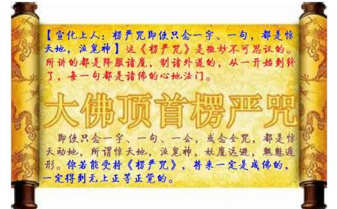

●南无楞严会上佛
妙湛总持不动尊 首楞严王世希有 销我亿劫颠倒想 不历僧祇获法身 愿今得果成宝王 还度如是恒沙众
将此深心奉尘刹 是则名为报佛恩 伏请
大雄大力大慈悲 希更审除微细惑 令我早登无上觉 于十方界坐道场 舜若多性可销亡 烁迦罗心无动转
南无
南无
尔时世尊，从肉髻中，涌百宝光。光中涌出，千叶宝莲。有化如来，坐宝华中。顶放十道，百宝光明。
一一光明，皆遍示现，十恒河沙，金刚密迹，擎山持杵，遍
一心听佛，无见顶相，放光如来，宣说神咒。
（第一会00:00——05:53）nā mō sà dàn tuō sū qié duō yē e là hē dì sānmiǎosānpútuó xiě nā mō sà dàn tuō fótuó jùzhī sěiníshàn
南无萨怛他。苏伽多耶。阿啰诃帝。三藐三菩陀写 南无萨怛他
nā mō sà pó bó tuó bó dì sà duō pí bìnā mō sà duōnán sānmiǎosānpútuó jù zhī nán suō shě là pó jiā
南无萨婆。勃陀勃地。萨跢鞞弊 南无萨多南。三藐三菩陀。俱知喃 娑舍啰婆迦。
sēngqiénán nā mō lú jī e luó hàn duōnán nā mō sū lú duō bō nuónán nā mō suō jié lìtuó qié mínán
nā mō lú jī sānmiǎo qiéduōnán sānmiǎo qiébō là dǐ bō duō nuó nán nā mō tí pó lí sěi nǎn nā mō xī tuó yē
南无卢鸡三藐伽哆喃 三藐伽波啰。底 波多那喃 南无提婆离瑟赧 南无悉陀耶。
pí dì yē tuó là lí sěi nǎn shě bō nú jiē là hē suō hē suō là mó tuōnán nā mō bá là hē mó ní
毗地耶。陀啰离瑟赧 舍波奴。揭啰诃。娑诃娑啰摩他喃 南无跋啰诃摩尼
nā mō yīn tuó là yē nā mō pó qié pó dìlú tuó là yēwū mó bō dì suō xī yè yēnā mō pó qié pó dì
南无因陀啰耶 南无婆伽婆帝 卢陀啰耶 乌摩般帝 娑醯夜耶 南无婆伽婆帝
nuó là yě ná yēbō zhē mó hē sān mù tuó là nā mō xī jié lì duō yēnā mō pó qié pó dì mó hē jiā là yē
那啰野拏耶 盘遮摩诃。三慕陀啰 南无悉羯唎多耶 南无婆伽婆帝 摩诃迦啰耶
dì lì bō lá nà qié làpí tuó là bō ná jiā là yēe dì mù dìshīmó shě nuó ní pó xī ní
地唎般剌那伽啰 毗陀啰。波拏迦啰耶 阿地目帝 尸摩舍那泥。婆悉泥
mó dá lì qié nánā mō xī jié lì duō yē nā mō pó qié pó dì duōtuō qiéduō jù là yēnā mō bō tóu mó
摩怛唎伽拏 南无悉羯唎多耶 南无婆伽婆帝 多他伽跢俱啰耶 南无般头摩。
jù là yēnā mō bá shé là jù là yēnā mō mó ní jù là yēnā mō qié shé jù là yē
俱啰耶 南无跋阇啰。俱啰耶 南无摩尼俱啰耶 南无伽阇俱啰耶
nā mō pó qié pó dì dì lì chá shū là xī nàbō là hē là ná là shé yē duò tuō qiéduōyē
南无婆伽婆帝 帝唎茶。输啰西那 波啰诃啰拏啰阇耶 跢他伽多耶
nā mō pó qié pó dìnā mō e míduō pó yē duō tuō qiéduōyēe là hē dìsānmiǎosānpútuó yē
南无婆伽婆帝 南无阿弥多婆耶 跢他伽多耶 阿啰诃帝 三藐三菩陀耶
nā mō pó qié pó dìe chú pí yēduō tuō qiéduōyē e là hē dì sānmiǎosān pútuó yē nā mō pó qié pó dì
南无婆伽婆帝 阿刍鞞耶 跢他伽多耶 阿啰诃帝 三藐三菩陀耶 南无婆伽婆帝
pí shā shéyējù lú fèizhù lì yē bō là pó là shé yē duò tuō qiéduōyēnā mō pó qié pó dì
鞞沙阇耶 俱嚧吠柱唎耶 般啰婆啰阇耶 跢他伽多耶 南无婆伽婆帝
sān bǔ shībì duò sàlián nà là lá shé yē duōtuō qiéduōyē e là hē dìsānmiǎo sānpútuó yē
三补师毖多 萨怜捺啰。剌阇耶 跢他伽多耶 阿啰诃帝 三藐三菩陀耶
nā mō pó qié pó dìshě jī yě mǔ nuó yè duōtuō qiéduōyē e là hē dìsānmiǎo sānpútuó yē
南无婆伽婆帝 舍鸡野。母那曳 跢他伽多耶 阿啰诃帝 三藐三菩陀耶
nā mō pó qié pó dìlà dàn nà jī dū là shé yē duōtuō qiéduōyēe là hē dì sānmiǎosān pútuó yē
南无婆伽婆帝 剌怛那。鸡都啰阇耶 跢他伽多耶 阿啰诃帝 三藐三菩陀耶
dì piáo nā mō sà jié lì duō yì tán póqié póduō sà dàntuō qié dū sěiníshàn sà dàn duō bō dá lán
帝瓢。南无萨羯唎多 翳昙婆伽婆多 萨怛他。伽都瑟尼钐 萨怛多。般怛嚂
nā mō e pó là shìdānbō là dì yáng qí làsà là pó bù duō jiē là hē ní jié là hē jié jiā là hē ní
南无阿婆啰视躭 般啰帝。扬歧啰 萨啰婆部多。揭啰诃 尼揭啰诃。羯迦啰诃尼
bá là bì dì yē chì tuó nǐ e jiā là mì lì zhù bō lì dàn là yē níngjiélì sà là pó pántuónuó mù chā ní
跋啰毖地耶。叱陀你 阿迦啰密唎柱 般唎怛啰耶。儜揭唎 萨啰婆。盘陀那。目叉尼
sà là pó tù sěi zhà tù xī fá bō nà nǐ fá là ní zhě dū là shì dì nán jié là hē suō hē sà là ruò shé
萨啰婆。突瑟吒 突悉乏。般那你 伐啰尼 赭都啰失帝南 羯啰诃。娑诃萨啰若阇
píduō bēng suō nà jié lì e sěi zhàbìng shě dì nán nà chā chàdàn làruòshébō là sà tuó nà jié lì
毗多崩。娑那羯唎 阿瑟吒冰 舍帝南 那叉刹怛啰若阇 波啰萨陀那羯唎
e sěi zhà nán mó hē jié là hē ruòshé píduō bēng sà nà jié lìsà pó shě dū lúnǐ pó là ruò shé
阿瑟吒南 摩诃揭啰诃若阇 毗多崩。萨那羯唎 萨婆舍都嚧 你婆啰若阇
hū lán tù xī fá nànzhē nà shě ní bì shā shě xī dàn làe jí ní wūtuó jiālà ruòshé
呼蓝突悉乏。难遮那舍尼 毖沙舍。悉怛啰 阿吉尼。乌陀迦啰若阇
e bō là shì duō jū là mó hē bōlà zhànchímó hē dié duō mó hē dì shé mó hē shuìduō shépólà
阿般啰视多具啰 摩诃般啰战持 摩诃迭多 摩诃帝阇 摩诃税多阇婆啰
mó hē bá là pán tuó là pó xī nǐe lì yē duō làpí lì jù zhī shì pó píshéyēbá shé là mó lǐ dǐ
摩诃跋啰盘陀啰。婆悉你 阿唎耶多啰 毗唎俱知 誓婆毗阇耶 跋阇啰。摩礼底
pí shě lú duō bóténg wǎngjiā bá shé là zhìhè nuó e zhēmó là zhì pó bō là zhìduō bá shélà shànchí
毗舍嚧多 勃腾罔迦 跋阇啰。制喝那阿遮 摩啰制婆。般啰质多 跋阇啰擅持
pí shě là zhē shànduōshě pí tí pó bǔ shì duō sū mó lú bōmó hē shuìduō e lì yē duō làmó hē
毗舍啰遮 扇多舍。鞞提婆。补视多 苏摩嚧波 摩诃税多 阿唎耶多啰 摩诃
pó là e bō làbá shé là shāngjiēlà zhìpó bá shé là jù mó lì jù lán tuó lì bá shé là hè sà duōzhē
婆啰阿般啰 跋阇啰。商揭啰制婆 跋阇啰俱摩唎 俱蓝陀唎 跋阇啰。喝萨多遮
pí dì yē qiánzhēnuó mó lì jiākù sū mǔ pó jié là duō nà pí lú zhē nà jù lì yē yè là tù sěi ní shàn
毗地耶。干遮那。摩唎迦 啒苏母。婆羯啰多那 鞞嚧遮那俱唎耶 夜啰菟瑟尼钐
pí zhé lán pó mó ní zhē bá shé là jiā nà jiā bō là pó lú shé nà bá shé là dùnzhìzhē shuìduōzhē jiā mó là
毗折蓝婆。摩尼遮 跋阇啰。迦那迦波啰婆 嚧阇那跋阇啰。顿稚遮 税多遮。迦摩啰
chà shē shī bō là póyì dì yí dìmǔ tuó là jié ná suō pí là chàn jué fàn dū yìn tù nà mó mó xiě
刹奢尸。波啰婆 翳帝夷帝 母陀啰羯拏 娑鞞啰忏 掘梵都 印兔那。么么写
（第二会05:53——07:19）wū xìnlì sěi jiē ná bō lá shě xī duō sàdàntuō qié dū sěiníshàn hǔ xìndū lú yōng zhān pó nà
乌合牛 唎瑟揭拏 般剌舍悉多 萨怛他。伽都瑟尼钐 虎合牛 都卢雍 瞻婆那
hǔ xìn dū lú yōng xī dān pó nàhǔ xìn dū lú yōng bō là sěi dìyē sān bō chā ná jié là hǔ xìn
虎合牛 都卢雍 悉耽婆那 虎合牛 都卢雍 波啰瑟地耶。三般叉。拏羯啰 虎合牛
dū lú yōng sà pó yàochā jiē là chà suō jiē là hē ruòshé píténgbēng sà nà jié làhǔ xìndū lú yōng
都卢雍 萨婆药叉。喝啰刹娑 揭啰诃若阇 毗腾崩。萨那羯啰 虎合牛 都卢雍
zhě dū là shī dǐ nán jiē là hē suō hē sà là nán píténg bēng sà nà làhǔ xìndū lú yōng là chā
者都啰。尸底南 揭啰诃。娑诃萨啰南 毗腾崩。萨那啰 虎合牛 都卢雍 啰叉
pó qié fàn sà dán tuō qié dū sěi níshàn bō làdiǎn shé jí lì mó hē suō hē sà là bó shù suō hē sà là
婆伽梵 萨怛他。伽都瑟尼钐 波啰点阇吉唎 摩诃娑诃萨啰 勃树娑诃萨啰。
shì lì shā jù zhī suō hē sà ní dì lìe bì tí shì pó lì duō zhàzhà yīngjiā mó hē bá shé lú tuó là
室唎沙 俱知娑诃萨泥帝口隶 阿弊提视婆唎多 吒吒罂迦 摩诃跋阇。嚧陀啰
dì lì pú pó nàmàn chá là wū xìnsuō xì dì bó pó dūmó móyìn tù nà mó mó xiě
帝唎菩婆那 曼茶啰 乌合牛 娑悉帝薄婆都 么么 印兔那么么写